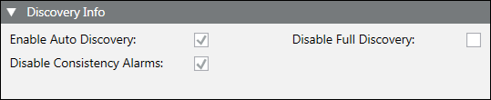

Discovery Info

The Discovery Info expander displays information about the default BACnet device discovery settings, which you can modify.
Discovery Info | |
Item | Description |
Enable Auto Discovery | Indicates that objects will be automatically discovered for this device as they are added. |
Disable Consistency Alarms | Prevents a device from displaying inconsistency alarms from the database. |
Disable Full Discovery | Prevents a device from doing a full discovery (device objects will not be discovered). |